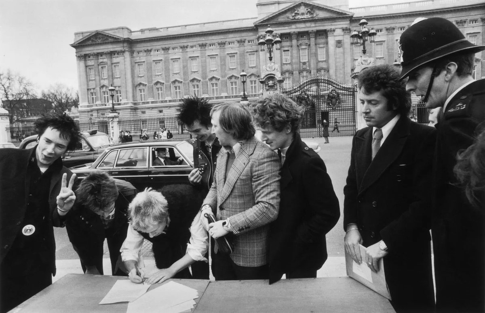

麦片
@maipianaini0930
@PunkRockStory “hello emi～～～gooodbyyyyye aaammm！”

Punkrock History
@PunkRockStory
49 years ago today
The Sex Pistols signed a record deal with A&M Records on March 10, 1977.
The termination: After only six days, several incidents in the offices, and pressure from other artists and the US headquarters, the band was fired.
📸 Graham Wood
#sexpistols https://t.co/8oEpm1dzNE